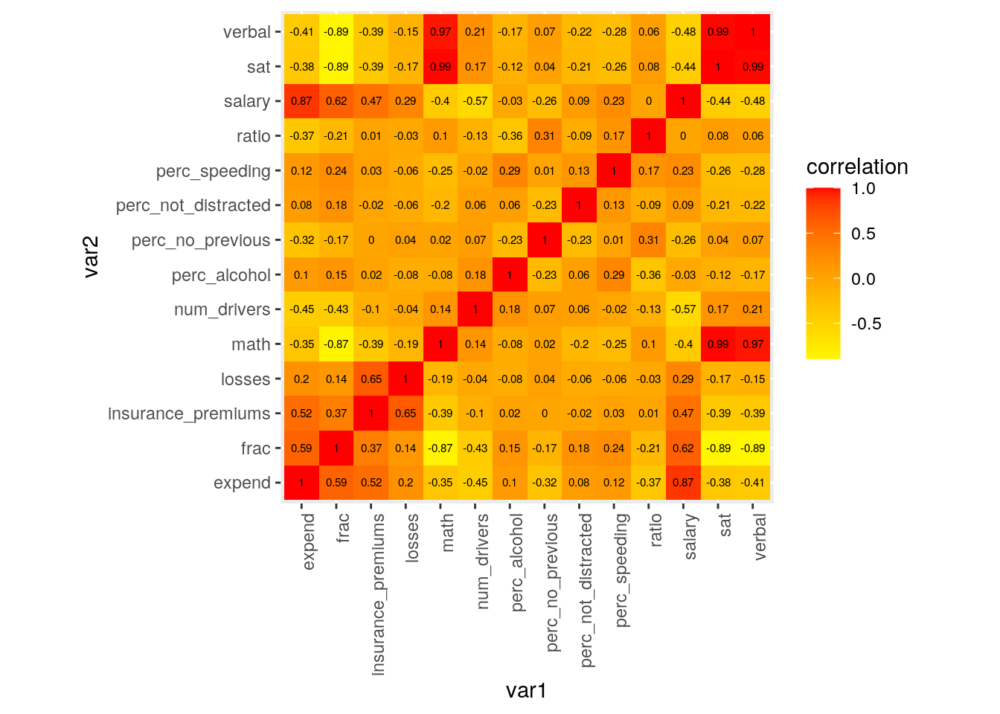
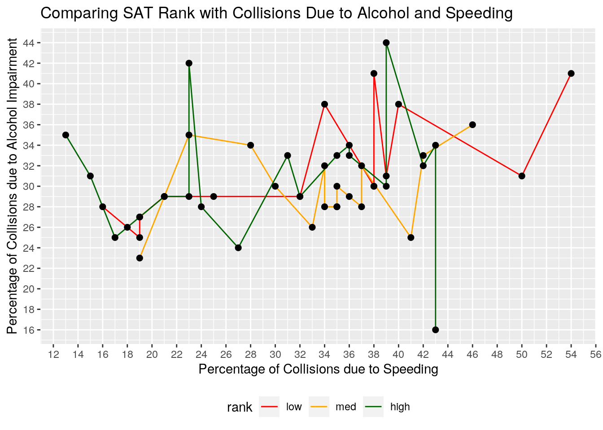
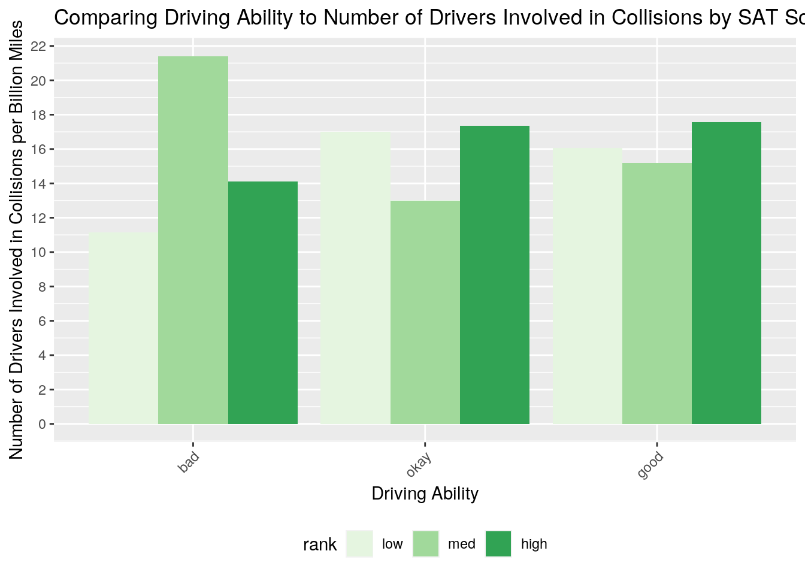
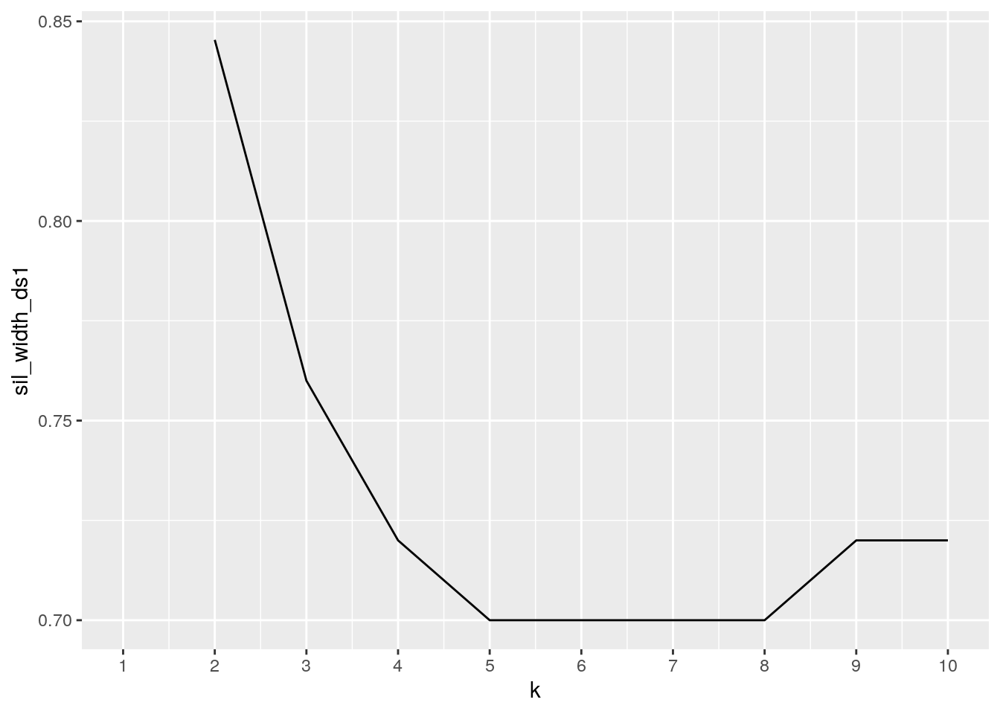
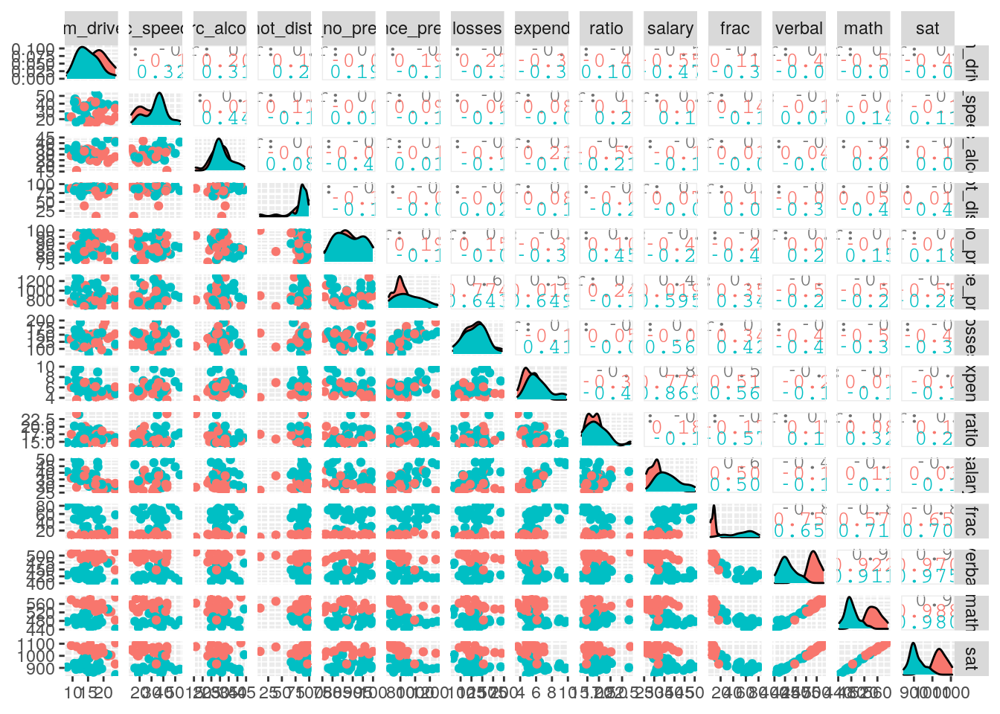
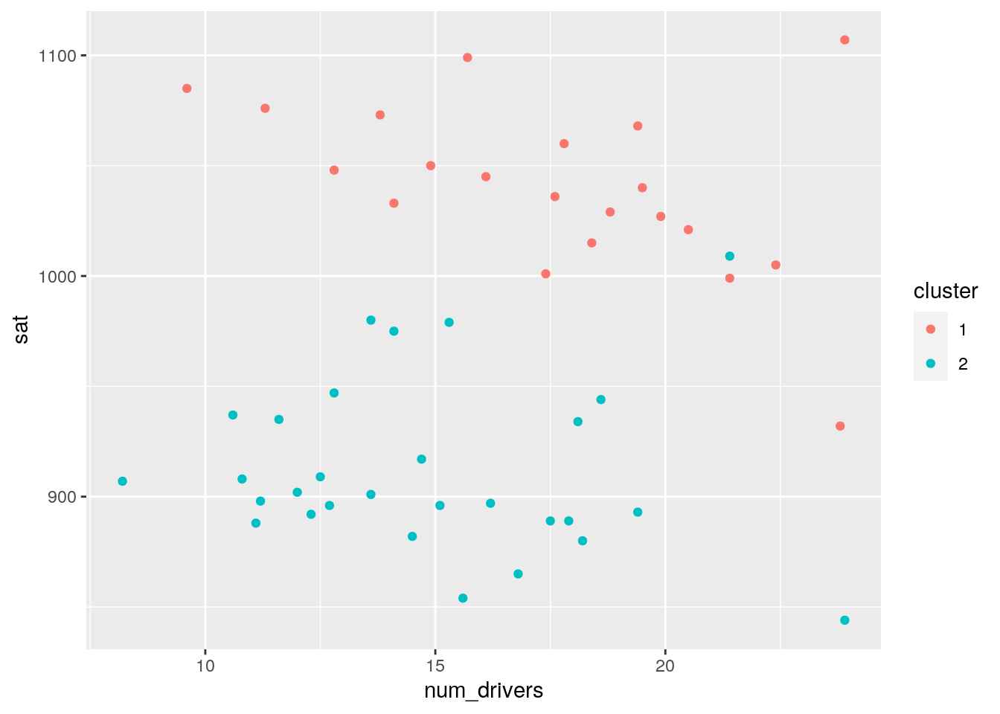
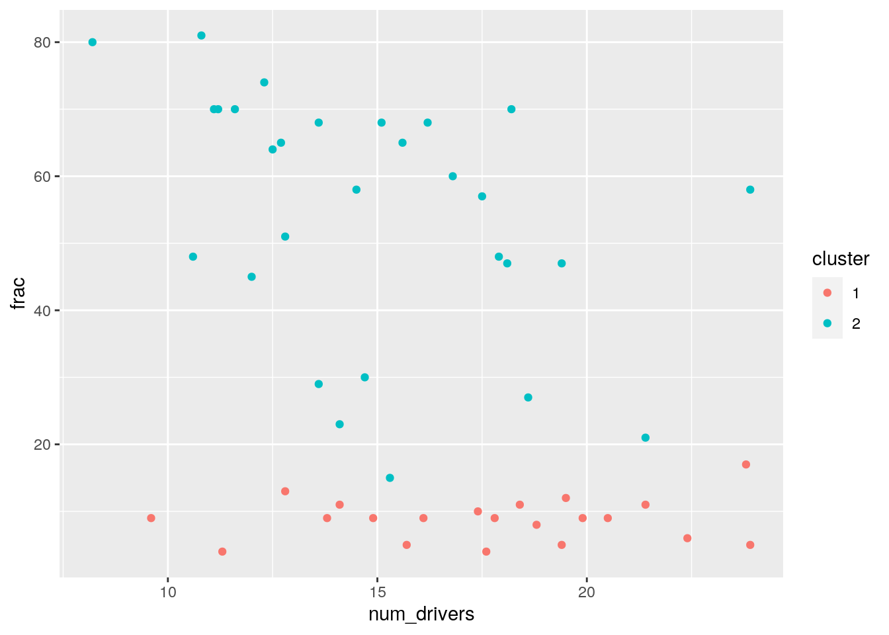
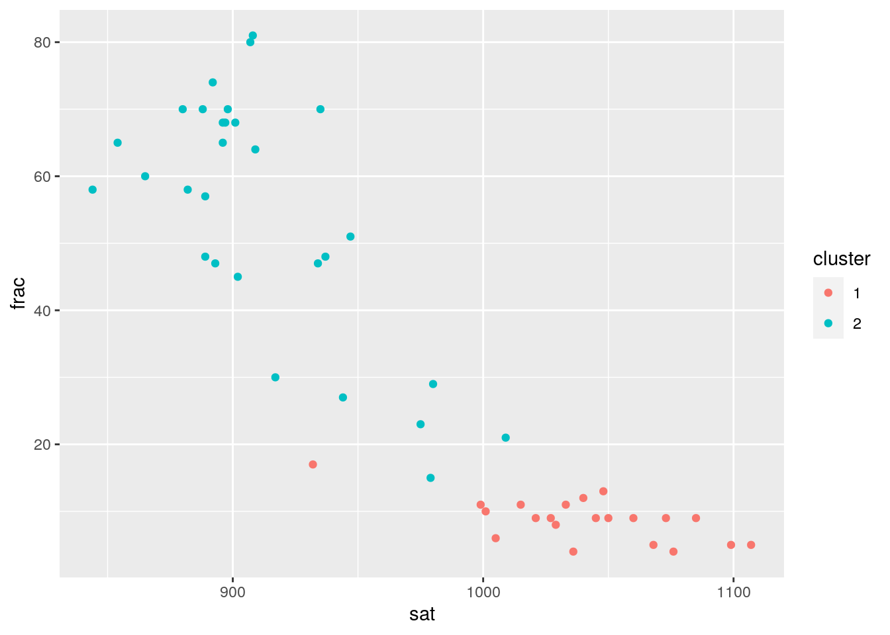
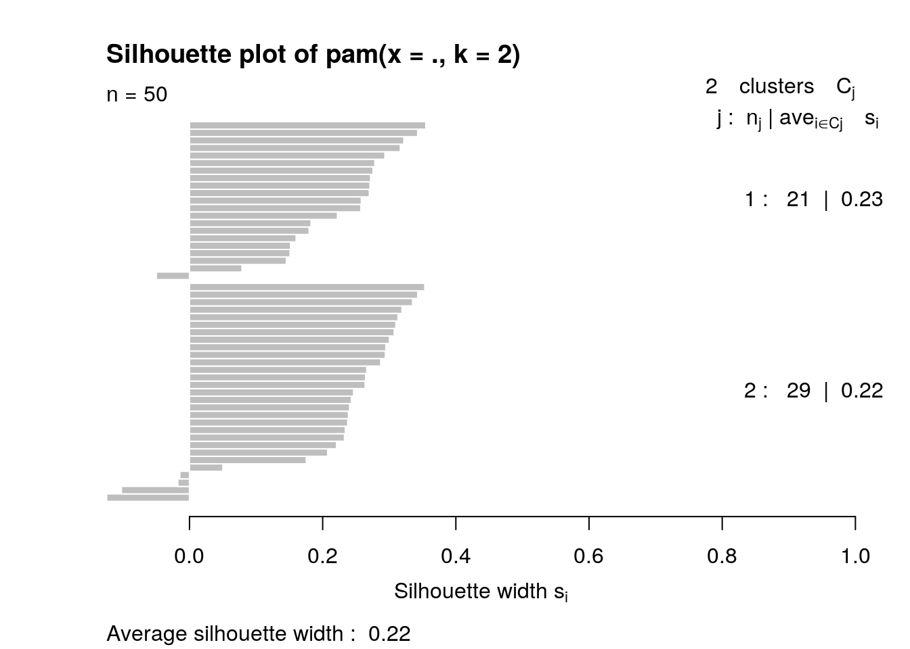

I chose datasets 'bad_drivers' and 'SAT' to explore potential associations between driving abilities and intelligence. Do states with lower SAT scores have worse drivers? That's what I'm going to find out! Dataset 'bad_drivers' contains variables 'state,' 'num_drivers' (number of drivers involved in fatal collisions per billion miles), 'perc_speeding' (percentage of drivers involved in fatal collisions who were speeding), 'perc_alcohol' (percentage of drivers involved in fatal collisions who were alcohol-impaired), 'perc_not_distracted' (percentage of drivers involved in fatal collisions who were not distracted), 'perc_no_previous' (percentage of drivers involved in fatal collisions who had not been involved in any previous accidents), 'insurance_premiums' (car insurance premiums (dollars)), and 'losses' (losses incurred by insurance companies for collisions per insured driver (dollars)). Dataset 'SAT' has variables 'state,' 'expend' (expenditure per pupil in average daily attendance in public elementary and secondary schools, 1994-95 (in thousands of US dollars), 'ratio' (average pupil/teacher ratio in public elementary and secondary schools, Fall 1994), 'salary' (estimated average annual salary of teachers in public elementary and secondary schools, 1994-95 (in thousands of US dollars), 'frac' (percentage of all eligible students taking the SAT, 1994-95), 'verbal' (average verbal SAT score, 1994-95), 'math' (average math SAT score, 1994-95), and 'sat' (average total SAT score, 1994-95). Datasets 'bad_drivers' and 'SAT' were acquired through the R packages "fivethirtyeight" and "mosaicData," respectively.
I thought these two datasets would be fun and interesting to join to see if there are any potential associations between each states' average SAT scores/education quality and their quality of drivers. Perhaps higher intelligence and better educational upbringing influence driving ability and decision making. For example, maybe states with higher SAT scoreshave a lower percentage of fatal collisions caused by speeding or alcohol-impairment because having a solid educational upbringing as students reflects upon their smart decision making as drivers. On the other hand, maybe states with lower SAT scores will have a lower percentage of fatal collisions from drivers who were not distracted or have had no previous accidents. Whether or not there is an association between driving skills and SAT scores will be interesting to explore!
library(tidyverse)
install.packages("fivethirtyeightdata", repos = "https://fivethirtyeightdata.github.io/drat/",
type = "source")
library(fivethirtyeight)
glimpse(bad_drivers)## Rows: 51
## Columns: 8
## $ state <chr> "Alabama", "Alaska", "Arizona", "Arkansas", "Cali…
## $ num_drivers <dbl> 18.8, 18.1, 18.6, 22.4, 12.0, 13.6, 10.8, 16.2, 5…
## $ perc_speeding <int> 39, 41, 35, 18, 35, 37, 46, 38, 34, 21, 19, 54, 3…
## $ perc_alcohol <int> 30, 25, 28, 26, 28, 28, 36, 30, 27, 29, 25, 41, 2…
## $ perc_not_distracted <int> 96, 90, 84, 94, 91, 79, 87, 87, 100, 92, 95, 82, …
## $ perc_no_previous <int> 80, 94, 96, 95, 89, 95, 82, 99, 100, 94, 93, 87, …
## $ insurance_premiums <dbl> 784.55, 1053.48, 899.47, 827.34, 878.41, 835.50, …
## $ losses <dbl> 145.08, 133.93, 110.35, 142.39, 165.63, 139.91, 1…library(mosaicData)
glimpse(SAT)## Rows: 50
## Columns: 8
## $ state <fct> Alabama, Alaska, Arizona, Arkansas, California, Colorado, Conn…
## $ expend <dbl> 4.405, 8.963, 4.778, 4.459, 4.992, 5.443, 8.817, 7.030, 5.718,…
## $ ratio <dbl> 17.2, 17.6, 19.3, 17.1, 24.0, 18.4, 14.4, 16.6, 19.1, 16.3, 17…
## $ salary <dbl> 31.144, 47.951, 32.175, 28.934, 41.078, 34.571, 50.045, 39.076…
## $ frac <int> 8, 47, 27, 6, 45, 29, 81, 68, 48, 65, 57, 15, 13, 58, 5, 9, 11…
## $ verbal <int> 491, 445, 448, 482, 417, 462, 431, 429, 420, 406, 407, 468, 48…
## $ math <int> 538, 489, 496, 523, 485, 518, 477, 468, 469, 448, 482, 511, 56…
## $ sat <int> 1029, 934, 944, 1005, 902, 980, 908, 897, 889, 854, 889, 979, …drivers <- bad_drivers
SAT <- SAT# The datasets were already tidy, but I untidied and retidied
# them
drivers %>% pivot_wider(names_from = "insurance_premiums", values_from = "losses") %>%
pivot_longer(cols = -c(1:6), names_to = "insurance_premiums",
values_to = "losses", values_drop_na = T) %>% glimpse()## Rows: 51
## Columns: 8
## $ state <chr> "Alabama", "Alaska", "Arizona", "Arkansas", "Cali…
## $ num_drivers <dbl> 18.8, 18.1, 18.6, 22.4, 12.0, 13.6, 10.8, 16.2, 5…
## $ perc_speeding <int> 39, 41, 35, 18, 35, 37, 46, 38, 34, 21, 19, 54, 3…
## $ perc_alcohol <int> 30, 25, 28, 26, 28, 28, 36, 30, 27, 29, 25, 41, 2…
## $ perc_not_distracted <int> 96, 90, 84, 94, 91, 79, 87, 87, 100, 92, 95, 82, …
## $ perc_no_previous <int> 80, 94, 96, 95, 89, 95, 82, 99, 100, 94, 93, 87, …
## $ insurance_premiums <chr> "784.55", "1053.48", "899.47", "827.34", "878.41"…
## $ losses <dbl> 145.08, 133.93, 110.35, 142.39, 165.63, 139.91, 1…SAT %>% pivot_wider(names_from = "verbal", values_from = "math") %>%
pivot_longer(cols = -c(1:6), names_to = "verbal", values_to = "math",
values_drop_na = T) %>% glimpse()## Rows: 50
## Columns: 8
## $ state <fct> Alabama, Alaska, Arizona, Arkansas, California, Colorado, Conn…
## $ expend <dbl> 4.405, 8.963, 4.778, 4.459, 4.992, 5.443, 8.817, 7.030, 5.718,…
## $ ratio <dbl> 17.2, 17.6, 19.3, 17.1, 24.0, 18.4, 14.4, 16.6, 19.1, 16.3, 17…
## $ salary <dbl> 31.144, 47.951, 32.175, 28.934, 41.078, 34.571, 50.045, 39.076…
## $ frac <int> 8, 47, 27, 6, 45, 29, 81, 68, 48, 65, 57, 15, 13, 58, 5, 9, 11…
## $ sat <int> 1029, 934, 944, 1005, 902, 980, 908, 897, 889, 854, 889, 979, …
## $ verbal <chr> "491", "445", "448", "482", "417", "462", "431", "429", "420",…
## $ math <int> 538, 489, 496, 523, 485, 518, 477, 468, 469, 448, 482, 511, 56…Both datasets were already tidy, so I untidied some columns and retidied them. With the 'drivers' dataset, I used 'pivot_wider()' to untidy the columns 'insurance_premiums' and 'losses,' then I used 'pivot_longer()' to retidy the dataset back to its original columns. With the 'SAT' dataset, I used 'pivot_wider()' to untidy the columns 'verbal' and 'math,' then I used 'pivot_longer()' to retidy them. I use these functions again in the Wrangling portion of the assignment as well.
drivers %>% dim()## [1] 51 8SAT %>% dim()## [1] 50 8drivers_sat <- drivers %>% inner_join(SAT)I did an inner join of the two datasets. There were 51 observations in the 'drivers' dataset and 50 observations in the 'SAT' dataset. One of the observations was dropped (the state "District of Columbia") from the 'drivers' dataset because 'SAT' did not have this state in its dataset. I chose this join because I want to see if there are associations between SAT scores and driving ability per state, so I need data from both datasets per each state in order to be able to compare them. Since District of Columbia is not in the SAT dataset, I do not want it in my joined data since there is nothing to compare this state to. I do not see any potential problems with dropping this observation.
library(dplyr)
# Creating 2 categorical variables
drivers_sat_cat <- drivers_sat %>% mutate(rank = case_when(sat >
1000 ~ "high", sat <= 1000 & 900 <= sat ~ "med", sat < 900 ~
"low"))
drivers_sat_cat <- drivers_sat_cat %>% mutate(driving = case_when(perc_no_previous >
90 ~ "good", perc_no_previous <= 90 & 80 <= perc_no_previous ~
"okay", perc_no_previous < 80 ~ "bad"))
# Summary statistics for numeric variables
sum_stat_num <- drivers_sat_cat %>% summarize_if(is.numeric,
list(mean = mean, median = median, sd = sd, var = var, quantile = quantile)) %>%
pivot_longer(contains("_"), names_to = "variable", values_to = "values") %>%
mutate(variable = str_replace(variable, "_mean", ".mean")) %>%
mutate(variable = str_replace(variable, "_median", ".median")) %>%
mutate(variable = str_replace(variable, "_sd", ".sd")) %>%
mutate(variable = str_replace(variable, "_quantile", ".quantile")) %>%
mutate(variable = str_replace(variable, "_var", ".var")) %>%
separate(variable, sep = "\\.", into = c("variable", "stat")) %>%
distinct(values, .keep_all = TRUE) %>% pivot_wider(names_from = "stat",
values_from = "values")
glimpse(sum_stat_num)## Rows: 14
## Columns: 6
## $ variable <chr> "num_drivers", "perc_speeding", "perc_alcohol", "perc_not_di…
## $ mean <list> [15.988, 31.68, 30.76, 85.64, 88.5, 879.219, 134.462, 5.905…
## $ median <list> [15.65, 34, 30, 88, 87.5, 847.235, 136.38, 5.7675, 16.6, 33…
## $ sd <list> [3.911711, 9.725708, 5.156965, 15.17753, 6.840008, 171.236,…
## $ var <list> [15.30149, 94.58939, 26.59429, 230.3576, 46.78571, 29321.78…
## $ quantile <list> [<8.20, 12.80, 18.55, 23.90>, <13, 23, 38, 54>, <16, 33, 44…# Summary statistics grouped by categorical variables
sum_stat_group <- drivers_sat_cat %>% group_by(rank, driving) %>%
filter(driving == "good") %>% select(expend, frac, verbal,
math, sat) %>% summarize_if(is.numeric, list(mean = mean,
median = median, min = min, max = max, distinct = n_distinct)) %>%
pivot_longer(contains("_"), names_to = "stats", values_to = "values") %>%
separate(stats, c("category", "stat")) %>% pivot_wider(names_from = "stat",
values_from = "values") %>% arrange(mean)
glimpse(sum_stat_group)## Rows: 15
## Columns: 8
## Groups: rank [3]
## $ rank <chr> "high", "low", "med", "high", "med", "low", "low", "med", "l…
## $ driving <chr> "good", "good", "good", "good", "good", "good", "good", "goo…
## $ category <chr> "expend", "expend", "expend", "frac", "frac", "frac", "verba…
## $ mean <dbl> 4.646143, 5.941750, 6.078429, 8.000000, 40.000000, 59.750000…
## $ median <dbl> 4.586, 5.772, 5.443, 9.000, 30.000, 61.500, 417.500, 445.000…
## $ min <dbl> 3.656, 5.193, 4.210, 4.000, 15.000, 48.000, 406.000, 429.000…
## $ max <dbl> 6.136, 7.030, 8.963, 13.000, 68.000, 68.000, 429.000, 468.00…
## $ distinct <dbl> 7, 4, 7, 5, 7, 4, 4, 7, 4, 7, 7, 7, 4, 7, 7# Correlation matrix of numeric variables
stat_cor <- drivers_sat_cat %>% na.omit %>% select_if(is.numeric)
cor(stat_cor) %>% head(n = 3)## num_drivers perc_speeding perc_alcohol perc_not_distracted
## num_drivers 1.0000000 -0.0186636 0.1757854 0.05932482
## perc_speeding -0.0186636 1.0000000 0.2914061 0.12847227
## perc_alcohol 0.1757854 0.2914061 1.0000000 0.05780096
## perc_no_previous insurance_premiums losses expend
## num_drivers 0.067121733 -0.10465864 -0.03506761 -0.44555526
## perc_speeding 0.006442366 0.03377001 -0.06157994 0.12225899
## perc_alcohol -0.229112249 0.01517102 -0.08344099 0.09607162
## ratio salary frac verbal math
## num_drivers -0.1314113 -0.57432669 -0.4313459 0.2057876 0.14334805
## perc_speeding 0.1688139 0.22899667 0.2350530 -0.2757048 -0.24783571
## perc_alcohol -0.3647780 -0.02984266 0.1524378 -0.1740781 -0.07526441
## sat
## num_drivers 0.1737764
## perc_speeding -0.2627933
## perc_alcohol -0.1222839I created categorical variables in the joined dataset to create SAT rankings of 'high,' 'med,' and 'low' based on SAT score ranges and to create driving designations of 'good,' 'okay,' and 'bad' based on 'perc_no_previous' using 'mutate().' The first summary statistic shows the mean, median, standard deviation, quantile, and variation for all the numeric variables in the joined dataset per state. These statistics show that the mean and median of each of the variables are relatively close together. For example, the mean of 'num_drivers' is 15.988 and the median is 15.65. The mean of 'ratio' is 16.858 and its median is 16.6. This could indicate that there are not extreme outliers in the data since the mean is not skewed too far away from the median. These statistics also show that the values for variables 'insurance_premiums' and 'sat' are relatively spread out with a standard deviation of 171.236 and 74.821, respectively. The values for variables 'expend' and 'ratio' are not as far from the mean with a standard deviation of 1.363 and 2.266, respectively. An interesting variable to look at for 'quantile' is 'sat,' showing that 0% is a score of 844, 25% is a score of 897.25, 75% is a score of 1032, and 100% is a score of 1107.
The second summary statistics show the mean, median, minimum, maximum, and distinct values of the dataset when grouped by 'rank' and 'driving,' filtering by just the 'good' drivers, and selecting only the variables 'expend', 'frac', 'verbal', 'math', and 'sat.' These statistics show that the mean 'sat' score of good drivers with a 'high' ranking sat score is 1032.571, the mean 'sat' score of good drivers with a 'med' ranking score is 937.714, and the mean 'sat' score of good drivers with a 'low' ranking score is 880.500. The minimum and maximum scores for the 'high' ranking good drivers are 1005 and 1076, respectively. For 'med' ranking good drivers they are 901 and 980. For the 'low' ranking good drivers they are 854 and 897. The medians for each variable are relatively close to the mean values. A correlation matrix was made with all the numeric variables in the dataset, with the highest correlations being between variables 'math,' 'verbal,' and 'sat,' and the lowest correlations being 'perc_no_previous' and 'perc_speeding.'
# Correlation Heatmap
stat_cor <- drivers_sat_cat %>% na.omit %>% select_if(is.numeric)
cor <- stat_cor %>% cor
cor_map <- cor %>% as.data.frame %>% rownames_to_column("var1") %>%
pivot_longer(-1, names_to = "var2", values_to = "correlation")
cor_map %>% ggplot(aes(var1, var2, fill = correlation)) + geom_tile() +
scale_fill_gradient2(low = "yellow", mid = "orange", high = "red") +
geom_text(aes(label = round(correlation, 2)), color = "black",
size = 2) + theme(axis.text.x = element_text(angle = 90,
hjust = 1)) + coord_fixed()
# Plot 1
drivers_sat_cat %>% mutate(rank = factor(rank, levels = c("low",
"med", "high"))) %>% ggplot(aes(x = perc_speeding, y = perc_alcohol,
color = rank)) + geom_line() + geom_point(color = "black",
size = 2) + theme_gray() + scale_color_manual(values = c("red",
"orange", "dark green")) + scale_x_continuous(breaks = seq(0,
60, 2)) + scale_y_continuous(breaks = seq(0, 60, 2)) + ggtitle("Comparing SAT Rank with Collisions Due to Alcohol and Speeding") +
ylab("Percentage of Collisions due to Alcohol Impairment") +
xlab("Percentage of Collisions due to Speeding") + theme(legend.position = "bottom")
# Plot 2
drivers_sat_cat %>% mutate(rank = factor(rank, levels = c("low",
"med", "high"))) %>% mutate(driving = factor(driving, levels = c("bad",
"okay", "good"))) %>% ggplot(aes(x = driving, y = num_drivers,
fill = rank)) + geom_bar(stat = "summary", fun = mean, position = "dodge") +
theme(axis.text.x = element_text(angle = 45, hjust = 1),
legend.position = "bottom") + scale_y_continuous(breaks = seq(0,
25, 2)) + scale_fill_brewer(palette = "Greens") + ggtitle("Comparing Driving Ability to Number of Drivers Involved in Collisions by SAT Score Rank") +
xlab("Driving Ability") + ylab("Number of Drivers Involved in Collisions per Billion Miles")
The first plot maps the variables 'perc_speeding,' 'perc_alcohol,' and SAT 'rank' to look for associations between SAT scores and driving ability/decision making. The plot shows some points where 'high' ranking SAT scorers have a notably higher percentage of collisions due to alcohol impairment than the 'low' and 'med' scorers. However, there is one point amongst 'high' scorers that has a significantly lower percentage of collision due to alcohol impairment than the 'med' and 'low' scorers. The 'med' ranking SAT scorers stay relatively in between the 'high' and 'low' data points for both percentage levels. The 'low' ranking SAT scorers have some points at a larger percentage of collisions due to speeding than the 'high' and 'low' scorers.
The second plot maps the variables 'drivers,' 'num_drivers,' and 'rank' on a barplot, taking the mean of 'num_drivers' per 'drivers' and 'rank.' This plot shows that of the 'bad' drivers, 'med' SAT scorers have a much higher percentage of drivers involved in fatal collisions per billion miles than 'high' and 'low' SAT scorers while 'low' scorers have the lowest percentage. Of the 'okay' drivers, 'high' SAT scorers have the highest percentage while 'med' drivers have the lowest. Of the 'good' drivers, 'high' SAT scorers have the highest percentage while 'med' scorers have the lowest.
# Processing data
library(cluster)
drivers_sat_pam1 <- drivers_sat %>% select_if(is.numeric) %>%
scale
# Choosing number of clusters (Silhouette Method)
sil_width_ds1 <- vector()
for (i in 2:10) {
pam_fit_ds1 <- pam(drivers_sat_pam1, diss = TRUE, k = i)
sil_width_ds1[i] <- pam_fit_ds1$silinfo$avg.width
}
ggplot() + geom_line(aes(x = 1:10, y = sil_width_ds1)) + scale_x_continuous(name = "k",
breaks = 1:10)
# PAM analysis
pam_ds1 <- drivers_sat %>% select_if(is.numeric) %>% scale %>%
pam(k = 2)
pam_ds1## Medoids:
## ID num_drivers perc_speeding perc_alcohol perc_not_distracted
## [1,] 16 0.4632244 -0.4811989 -1.3108486 -0.56926242
## [2,] 29 -1.1217597 0.3413633 -0.1473735 0.08960612
## perc_no_previous insurance_premiums losses expend ratio
## [1,] -0.5116953 -0.5768003 -0.0263881 -0.06476341 -0.7756950
## [2,] -0.8040926 -0.7748310 -0.5681015 -0.03394466 -0.5550764
## salary frac verbal math sat
## [1,] -0.02977817 -0.9804795 1.3037317 1.1993615 1.2574084
## [2,] -0.01833280 1.2988364 -0.3735507 -0.4422366 -0.4132554
## Clustering vector:
## [1] 1 2 2 1 2 2 2 2 2 2 2 2 1 2 1 1 1 1 2 2 2 1 1 1 1 2 1 2 2 2 1 2 2 1 2 1 2 2
## [39] 2 2 1 1 2 1 2 2 2 1 1 1
## Objective function:
## build swap
## 3.515126 3.501174
##
## Available components:
## [1] "medoids" "id.med" "clustering" "objective" "isolation"
## [6] "clusinfo" "silinfo" "diss" "call" "data"drivers_sat %>% slice(pam_ds1$id.med)## # A tibble: 2 x 15
## state num_drivers perc_speeding perc_alcohol perc_not_distra… perc_no_previous
## <chr> <dbl> <int> <int> <int> <int>
## 1 Kans… 17.8 27 24 77 85
## 2 New … 11.6 35 30 87 83
## # … with 9 more variables: insurance_premiums <dbl>, losses <dbl>,
## # expend <dbl>, ratio <dbl>, salary <dbl>, frac <int>, verbal <int>,
## # math <int>, sat <int># Visualization
pam_ds_vis1 <- drivers_sat %>% select_if(is.numeric) %>% mutate(cluster = as.factor(pam_ds1$clustering))
library(GGally)
ggpairs(pam_ds_vis1, columns = 1:14, aes(color = cluster))
# Visualization of specific variables
ggplot(pam_ds_vis1, aes(x = num_drivers, y = sat, color = cluster)) +
geom_point()
ggplot(pam_ds_vis1, aes(x = num_drivers, y = frac, color = cluster)) +
geom_point()
ggplot(pam_ds_vis1, aes(x = sat, y = frac, color = cluster)) +
geom_point()
# Interpret clusters
plot(pam_ds1, which = 2)
# Goodness of fit
pam_ds1$silinfo$avg.width## [1] 0.2210737I performed PAM clustering on the numeric variables in my joined dataset. I chose the number of clusters to be 2 using the Silhouette Method because 2 had the highest width value. PAM clustering showed that IDs 16 and 29 (states Kansas and New Hampshire) are the most central points in each cluster and the representatives for each cluster. It shows how above or below the standard deviation each medoid is as well. Visualizing every possible variable with another using ggpairs, some more interesting clusters could be seen between 'num_drivers' and 'sat,' between 'num_drivers' and 'frac,' between 'frac' and 'sat,' which I plotted using ggplot. Plotting the 2 variables 'num_drivers' and 'sat' showed cluster 1 lying around 1000-1100 on the y-axis and cluster 2 lying around 850-1000 on the y-axis. Both clusters were spread evenly across the x-axis, showing that both clusters of higher and lower SAT scorers had a wide range of drivers involved in fatal collisions. Plotting the 2 variables 'num_drivers' and 'frac' showed cluster 1 lying around 20-80 on the y-axis and cluster 2 lying around 0-20 on the y-axis. Both clusters were spread evenly across the x-axis, showing that both clusters of eligible students taking the SAT had a wide range of drivers involved in fatal collisions. Plotting the 2 variables 'frac' and 'sat' showed cluster 1 condensed in the lower right region of the graph and cluster 2 spreading out more horizontally across the graph, with a general downward trend between the two variables. Cluster 1 shows that a lower percentage of eligible students who can take the SAT results in generally higher SAT scores while a higher percentage of eligible students who can take the SAT results in generally lower SAT scores. Analyzing goodness-of-fit with the average silhouette width of 0.22 shows that no substantial structure has been found.
## R version 3.6.1 (2019-07-05)
## Platform: x86_64-pc-linux-gnu (64-bit)
## Running under: Ubuntu 18.04.5 LTS
##
## Matrix products: default
## BLAS: /stor/system/opt/R/R-3.6.1/lib/R/lib/libRblas.so
## LAPACK: /stor/system/opt/R/R-3.6.1/lib/R/lib/libRlapack.so
##
## locale:
## [1] LC_CTYPE=en_US.UTF-8 LC_NUMERIC=C
## [3] LC_TIME=en_US.UTF-8 LC_COLLATE=en_US.UTF-8
## [5] LC_MONETARY=en_US.UTF-8 LC_MESSAGES=en_US.UTF-8
## [7] LC_PAPER=en_US.UTF-8 LC_NAME=C
## [9] LC_ADDRESS=C LC_TELEPHONE=C
## [11] LC_MEASUREMENT=en_US.UTF-8 LC_IDENTIFICATION=C
##
## attached base packages:
## [1] stats graphics grDevices utils datasets methods base
##
## other attached packages:
## [1] GGally_2.0.0 cluster_2.1.0 mosaicData_0.20.1
## [4] fivethirtyeight_0.6.1 forcats_0.5.0 stringr_1.4.0
## [7] dplyr_1.0.1 purrr_0.3.4 readr_1.3.1
## [10] tidyr_1.1.1 tibble_3.0.3 ggplot2_3.3.2
## [13] tidyverse_1.3.0
##
## loaded via a namespace (and not attached):
## [1] tidyselect_1.1.0 xfun_0.16 haven_2.3.1 colorspace_1.4-1
## [5] vctrs_0.3.2 generics_0.0.2 htmltools_0.5.0 yaml_2.2.1
## [9] utf8_1.1.4 blob_1.2.1 rlang_0.4.7 pillar_1.4.6
## [13] glue_1.4.2 withr_2.2.0 DBI_1.1.0 RColorBrewer_1.1-2
## [17] dbplyr_1.4.4 modelr_0.1.8 readxl_1.3.1 plyr_1.8.6
## [21] lifecycle_0.2.0 munsell_0.5.0 blogdown_0.20 gtable_0.3.0
## [25] cellranger_1.1.0 rvest_0.3.6 evaluate_0.14 labeling_0.3
## [29] knitr_1.29 fansi_0.4.1 broom_0.7.0 Rcpp_1.0.5
## [33] scales_1.1.1 backports_1.1.8 formatR_1.7 jsonlite_1.7.0
## [37] farver_2.0.3 fs_1.5.0 hms_0.5.3 digest_0.6.25
## [41] stringi_1.5.3 bookdown_0.20 grid_3.6.1 cli_2.0.2
## [45] tools_3.6.1 magrittr_1.5 crayon_1.3.4 pkgconfig_2.0.3
## [49] ellipsis_0.3.1 xml2_1.3.2 reprex_0.3.0 lubridate_1.7.9
## [53] reshape_0.8.8 assertthat_0.2.1 rmarkdown_2.3 httr_1.4.2
## [57] rstudioapi_0.11 R6_2.4.1 compiler_3.6.1## [1] "2020-12-04 19:08:57 CST"## sysname
## "Linux"
## release
## "4.15.0-117-generic"
## version
## "#118-Ubuntu SMP Fri Sep 4 20:02:41 UTC 2020"
## nodename
## "educcomp04.ccbb.utexas.edu"
## machine
## "x86_64"
## login
## "unknown"
## user
## "kjs3639"
## effective_user
## "kjs3639"